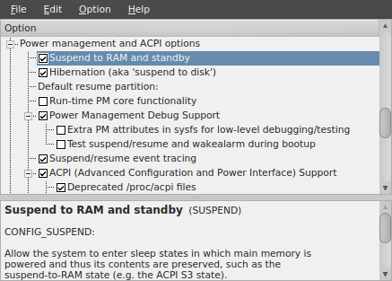
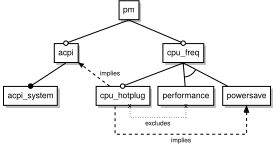
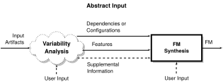
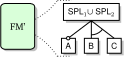
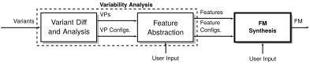
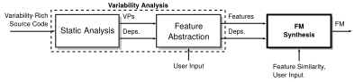
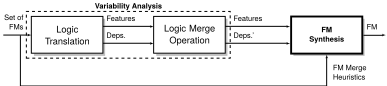
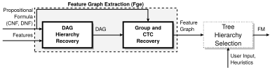

Feature Model Synthesis
Steven She
Generative Software Development Lab
Motivation
Large software systems contain variability embedded in documentation, design and implementation.

Documentation
STACK enables the stack(9) facility... stack(9) will also be compiled in automatically if DDB(4) is compiled into the kernel.
Source Code
#ifdef DDB
#ifndef KDB
#error KDB must be enabled for DDB to work!
#endif
#endif
Configuring FreeBSD
options SCHED_ULE #ULE scheduler
options PREEMPTION #Enable kernel thread preemption
options INET #InterNETworking
options INET6 #IPv6 communications protocols- Features and dependencies are scattered over documentation and code.
- Difficult to have an overview of the variability in the software system.
Configuring Linux
Feature Models
Benefits
Feature models describe the common and variable characteristics of products in a product line.
- First introduced by Kang et al.
- TODO
Feature Model Syntax
What is Feature Model Synthesis?
Feature model synthesis is the construction and design of a feature model given a set of features and legal combinations of features.
Applicable Scenarios
- Synthesis from Product Configurations
- Tool-Assisted Reverse Engineering from Code
- Feature Model Merge Operations
From Product Configurations
- Input consists of variants describing a product line.
- e.g., model variants, products developed by cloning code.
- Variants are compared and Variation Points (VPs) identified.
- VPs and VP configurations used as input for synthesis.
Tool-Assisted Reverse Engineering from Code
- Input consists of source code containing variability.
- e.g., FreeBSD with #ifdef annotated code.
- Static analysis of #ifdef identifies code fragments as VPs and dependencies between VPs.
Feature Model Operations

- Input consists of feature models.
- Feature models translated to a prop. formula by configuration semantics.
Publications
- VARY 2012 paper.
- Classified scenarios from roughly 20 papers into 4 categories based on their input artifacts.
- Derived 6 workflows showing commonality and difference between synthesis scenarios.
- Derived requirements for feature model synthesis algorithms.
Challenges of FM Synthesis
- Maximality and Completeness
- Synthesize a feature diagram that is maximally complete w.r.t. input configurations.
- Scalability
- Support thousands of features (e.g., Linux, eCos, FreeBSD)
- Support Derivation of a Feature Hierarchy
- Many possible feature diagrams that are complete w.r.t. input configurations.
Completeness
{ OS, staging }
{ OS, staging, net}
{ OS, staging, net, dst}
(complete)
(sound)
Maximality
{ OS, staging }
{ OS, staging, net}
{ OS, staging, net, dst}
Same Configurations, Different Hierarchies
Feature Graph
- Describes all feature diagrams that are complete w.r.t. input
- $$\varphi \rightarrow [[FG]]$$
Contributions
- IST Journal
- SPLC Paper
Determining a Hierarchy
How do we derive a single hierarchy out of all possible hierarchies?
Supporting to Large Input
- FreeBSD v8.0 1203 features
- eCos 1245 features
- Linux over 6000 features
Many possible tree hierarchies for a given input.
Solution: Feature Tree Synthesis

- Semi-automated.
- Presents lists ranked by textual similarity to a user.
- Consider incomplete input by relying solely on textual similarity.
Publications
- ICSE paper.
Thesis Statement
We efficiently synthesize feature models with thousands of features by identifying relevant features for building the feature hierarchy and combining reasoning on propositional formulas with textual similarity heuristics.
Contributions
- Feature Model Synthesis Scenarios
- Kconfig Variability Language
- Feature Graph Extraction
- Feature Tree Synthesis
Feature Model Synthesis Scenarios
- Classified scenarios from roughly 20 papers into 4 categories based on their input artifacts.
- Derived 6 workflows showing commonality and difference between synthesis scenarios.
Addressed Scenarios
- Configurable Platform
- Variants
- Model Management Operations
Variants
Configurable Platform
Model Management Operations
Abstract Workflows for Feature Model Synthesis

Challenge of Feature Model Synthesis
Real World Variability Models
Size of Kconfig Models

Feature Graph Extraction
Feature Tree Synthesis
Heads Up
reveal.js is a framework for easily creating beautiful presentations using HTML. You'll need a browser with support for CSS 3D transforms to see it in its full glory.
Vertical Slides
Slides can be nested inside of other slides, try pressing down.
Basement Level 1
Press down or up to navigate.
Basement Level 2
Cornify

Basement Level 3
That's it, time to go back up.
Slides
Not a coder? No problem. There's a fully-featured visual editor for authoring these, try it out at http://slid.es.
Point of View
Press ESC to enter the slide overview.
Hold down alt and click on any element to zoom in on it using zoom.js. Alt + click anywhere to zoom back out.
Works in Mobile Safari
Try it out! You can swipe through the slides and pinch your way to the overview.
Marvelous Unordered List
- No order here
- Or here
- Or here
- Or here
Fantastic Ordered List
- One is smaller than...
- Two is smaller than...
- Three!
Transition Styles
You can select from different transitions, like:
Cube -
Page -
Concave -
Zoom -
Linear -
Fade -
None -
Default
Global State
Set data-state="something" on a slide and "something"
will be added as a class to the document element when the slide is open. This lets you
apply broader style changes, like switching the background.
Custom Events
Additionally custom events can be triggered on a per slide basis by binding to the data-state name.
Reveal.addEventListener( 'customevent', function() {
console.log( '"customevent" has fired' );
} );
Slide Backgrounds
Set data-background="#007777" on a slide to change the full page background to the given color. All CSS color formats are supported.
Image Backgrounds
<section data-background="image.png">Repeated Image Backgrounds
<section data-background="image.png" data-background-repeat="repeat" data-background-size="100px">Background Transitions
Pass reveal.js the backgroundTransition: 'slide' config argument to make backgrounds slide rather than fade.
Background Transition Override
You can override background transitions per slide by using data-background-transition="slide".
Clever Quotes
These guys come in two forms, inline:
“The nice thing about standards is that there are so many to choose from”
and block:
“For years there has been a theory that millions of monkeys typing at random on millions of typewriters would reproduce the entire works of Shakespeare. The Internet has proven this theory to be untrue.”
Pretty Code
function linkify( selector ) {
if( supports3DTransforms ) {
var nodes = document.querySelectorAll( selector );
for( var i = 0, len = nodes.length; i < len; i++ ) {
var node = nodes[i];
if( !node.className ) ) {
node.className += ' roll';
}
};
}
}
Courtesy of highlight.js.
Intergalactic Interconnections
You can link between slides internally, like this.
Fragmented Views
Hit the next arrow...
... to step through ...
any type- of view
- fragments
Fragment Styles
There's a few styles of fragments, like:
grow
shrink
roll-in
fade-out
highlight-red
highlight-green
highlight-blue
Take a Moment
Press b or period on your keyboard to enter the 'paused' mode. This mode is helpful when you want to take distracting slides off the screen during a presentation.